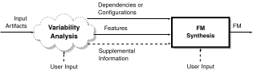

Feature Model Synthesis
Steven She
Generative Software Development Lab
Motivation
Large software systems contain variability embedded in documentation, design and implementation.

Documentation
STACK enables the stack(9) facility... stack(9) will also be compiled in automatically if DDB(4) is compiled into the kernel.
Source Code
#ifdef DDB
#ifndef KDB
#error KDB must be enabled for DDB to work!
#endif
#endif
Configuring FreeBSD
options SCHED_ULE #ULE scheduler
options PREEMPTION #Enable kernel thread preemption
options INET #InterNETworking
options INET6 #IPv6 communications protocols- Features and dependencies are scattered over documentation and code.
- Difficult to have an overview of the variability in the software system.
Variability Models

Explicit model of a system's variability.
Benefits include Graphical Configurators and
Automated Analysis.
Feature Models
Feature models describe the common and variable characteristics of products in a product line.
- First introduced by Kang et al.
- Describe a set of legal configurations.
Feature Model Syntax
$$\mathsf{powersave} \land \mathsf{acpi} \rightarrow \mathsf{cpu\_hotplug}$$Configuration Semantics
Feature models describe a set of
legal configurations.
[[

]]
{
{ OS, staging },
{ OS, staging, net},
{ OS, staging, net, dst}
}
- Represented as a propositional formula, \(\varphi\).
- Satisfying assignments are the legal configurations.
What is Feature Model Synthesis?
Feature model synthesis is the construction and design of a feature model given a set of features and legal combinations of features.
Applicable Synthesis Scenarios
- Synthesis From Product Configurations
- Tool-Assisted Reverse Engineering from Code
- Feature Model Merge Operations
From Product Configurations

- Input consists of variants describing a product line.
- e.g., model variants, products developed by cloning code.
- Variants are compared and Variation Points (VPs) identified.
- VPs and VP configurations used as input for synthesis.
Tool-Assisted Reverse Engineering from Code

- Input consists of source code containing variability.
- e.g., FreeBSD with #ifdef annotated code.
- Static analysis of #ifdef statements identifies code fragments as VPs and dependencies between VPs.
Feature Model Operations


- Input consists of feature models.
- Feature models translated to a prop. formula by configuration semantics.
- Operation applied to formula then used as input to synthesis.
Requirements for FM Synthesis
- Input
- Support input as either Configurations or Dependencies.
- Sound and Complete
- Derive an exact feature model describing the input.
- Scalable
- Support 10 to 1000's of features (e.g., Linux, FreeBSD).
- Hierarchy Selection
- Use User input or heuristics to select a distinct feature hierarchy.
Thesis Statement
We efficiently synthesize large scale feature models
with algorithms that use
SAT-based reasoning on propositional formulas and
that suggest a feature hierarchy with
textual similarity heuristics.
Contributions
- Feature Graph Extraction
- Feature Tree Synthesis
- Analysis of the Linux Kconfig Language
- Extraction of the Linux variability model
Feature Graph Extraction
Requirements for FM Synthesis
- Input
- Support input as either Configurations or Dependencies.
- Sound and Complete
- Derive an exact feature model describing the input.
- Scalable
- Support 10 to 1000's of features (e.g., Linux, FreeBSD).
- Hierarchy Selection
- Use User input or heuristics to select a distinct feature hierarchy.
Soundness and Completeness
{
{ OS, staging },
{ OS, staging, net},
{ OS, staging, net, dst}
}


Sound and Complete Synthesis
{
{ OS, staging },
{ OS, staging, net},
{ OS, staging, net, dst}
}
\[
\mathsf{dst} \rightarrow \mathsf{net} \\
\]
Maximal Feature Diagram
{
{ OS, staging },
{ OS, staging, net},
{ OS, staging, net, dst}
}
\[
\mathsf{dst} \rightarrow \mathsf{net} \\
\]

Same Configs, Diff. Hierarchies
{
{ OS, staging },
{ OS, staging, net},
{ OS, staging, net, dst}
}
Feature Graph
{
{ OS, staging },
{ OS, staging, net},
{ OS, staging, net, dst}
}

- Encapsulates all diagrams that are complete.
- DAG as hierarchy, and overlapping feature groups.
Requirements for FM Synthesis
- Input
- Support input as either Configurations or Dependencies.
- Sound and Complete
- Derive an exact feature model describing the input.
- Scalable
- Support 10 to 1000's of features (e.g., Linux, FreeBSD).
- Hierarchy Selection
- Use User input or heuristics to select a distinct feature hierarchy.
DNF Input
{
{ OS, staging },
{ OS, staging, net},
{ OS, staging, net, dst}
}
A set of configurations represented as a DNF formula.
CNF Input
{
}
Dependencies represented as a CNF Formula.
Requirements for FM Synthesis
- Input
- Support input as either Configurations or Dependencies.
- Sound and Complete
- Derive an exact feature model describing the input.
- Scalable
- Support 10 to 1000's of features (e.g., Linux, FreeBSD).
- Hierarchy Selection
- Use User input or heuristics to select a distinct feature hierarchy.
Feature Graph Extraction (Fge)
- Synthesizes a feature graph given a formula in CNF or DNF.
- Fge-CNF and Fge-DNF.
- Feature graph is maximal and complete.
- Algorithm uses a SAT solver.
Two Crucial Steps
- DAG Hierarchy Recovery
- Recovers the hierarchy as an Implication Graph.
- Group and CTC Recovery
- Recovers feature groups and cross-tree constraints.
DAG Hierarchy Recovery

- Given a propositional formula, builds an Implication Graph.
- Describes all possible hierarchies as a DAG.
Group and CTC Recovery
- Identifies mutex-, xor-, and or-groups.
Requirements for FM Synthesis
- Input
- Support input as either Configurations or Dependencies.
- Sound and Complete
- Derive an exact feature model describing the input.
- Scalable
- Support 10 to 1000's of features (e.g., Linux, FreeBSD).
- Hierarchy Selection
- Use User input or heuristics to select a distinct feature hierarchy.
Experimental Evaluation
- Purpose
- Evaluate performance of our algorithms by comparing to related algorithms with same inputs and outputs a feature graph.
- Dataset
- Input representative of synthesis scenarios. Derive input from 267 FMs in a FM repository, 20 generated FMs, and the Linux variability model.
- Measure
- Time needed to compute each part of a feature graph.
Two Baseline Implementations
FIXMEFge-CNF vs. BDD-Based
- Dependencies as input.
- By Czarnecki and Wąsowski.
- Scaled to 300 features.
Fge-DNF vs. FCA-Based
- Configurations as input.
- By Ryssel et al.
- Based on Formal Concept Analysis.
Dataset Characteristics
- 267 feature models from the SPLOT model repository and the Linux variability model with 5426 features.
- 20 randomly generated FMs with 3CNF constraints.
Experiment Setup
FIXME- Repeated computation of each component of Fge (i.e., implication graph, mutex graph, and OR-group computation) 5 times for each algorithm. Recorded mean computation time.
- Null Hypothesis
- For each component of Fge there is no difference in the mean computation times for Fge-CNF and Fge-BDD.
Fge-CNF vs. Fge-BDD Results
SPLOT Dataset
| Component | Mean Difference (ms) | p-value |
| Implications | -16 | 0.63 |
| Mutual Exclusions | -20 | 0.38 |
| Or Groups | -10,854 | 1.13 x 10-9 |
Fge-CNF is significantly faster than the BDD-based algorithm for computing OR-Groups on the SPLOT dataset.
Generated Dataset
The BDD-based algorithm timed out for computing OR-Groups on all models, while Fge-CNF succeeded 12 models.
Fge-DNF vs. Fge-FCA Results
SPLOT Dataset
| Component | Mean Difference (ms) | p-value |
| Implications | 320 | 0.0059 |
| Mutual Exclusions | 166 | 0.0012 |
| Or Groups | -3,904 | 0.1214 |
Performance of Fge-DNF is similar to that of the FCA-based algorithm.
Fge-DNF vs. Fge-FCA (cont.)

Feature Tree Synthesis
Requirements for FM Synthesis
- Input
- Support input as either Configurations or Dependencies.
- Sound and Complete
- Derive an exact feature model describing the input.
- Scalable
- Support 10 to 1000's of features (e.g., Linux, FreeBSD).
- Hierarchy Selection
- Use User input or heuristics to select a distinct feature hierarchy.
Selecting a Hierarchy
to
or
How do we derive a single hierarchy out of all possible hierarchies?
Supporting Large Models
- FreeBSD v8.0 1203 features
- eCos 1245 features
- Linux over 6000 features
Many possible tree hierarchies for a given input.
Solution: Feature Tree Synthesis
to

- Semi-automated.
- Presents lists ranked by textual similarity to a user.
- Consider incomplete input by relying solely on textual similarity.
Publications
- ICSE paper.
Publications
- VARY 2012 paper.
- Classified scenarios from roughly 20 papers into 4 categories based on their input artifacts.
- Derived 6 workflows showing commonality and difference between synthesis scenarios.
- Derived requirements for feature model synthesis algorithms.
Feature Model Synthesis Scenarios
- Classified scenarios from roughly 20 papers into 4 categories based on their input artifacts.
- Derived 6 workflows showing commonality and difference between synthesis scenarios.
Addressed Scenarios
- Configurable Platform
- Variants
- Model Management Operations
Variants

Configurable Platform

Model Management Operations

Abstract Workflows for Feature Model Synthesis

Challenge of Feature Model Synthesis
Real World Variability Models
Size of Kconfig Models

Heads Up
reveal.js is a framework for easily creating beautiful presentations using HTML. You'll need a browser with support for CSS 3D transforms to see it in its full glory.
Transition Styles
You can select from different transitions, like:
Cube -
Page -
Concave -
Zoom -
Linear -
Fade -
None -
Default
Global State
Set data-state="something" on a slide and "something"
will be added as a class to the document element when the slide is open. This lets you
apply broader style changes, like switching the background.
Custom Events
Additionally custom events can be triggered on a per slide basis by binding to the data-state name.
Reveal.addEventListener( 'customevent', function() {
console.log( '"customevent" has fired' );
} );
Slide Backgrounds
Set data-background="#007777" on a slide to change the full page background to the given color. All CSS color formats are supported.
Image Backgrounds
<section data-background="image.png">Repeated Image Backgrounds
<section data-background="image.png" data-background-repeat="repeat" data-background-size="100px">Background Transitions
Pass reveal.js the backgroundTransition: 'slide' config argument to make backgrounds slide rather than fade.
Background Transition Override
You can override background transitions per slide by using data-background-transition="slide".
Clever Quotes
These guys come in two forms, inline:
“The nice thing about standards is that there are so many to choose from”
and block:
“For years there has been a theory that millions of monkeys typing at random on millions of typewriters would reproduce the entire works of Shakespeare. The Internet has proven this theory to be untrue.”
Pretty Code
function linkify( selector ) {
if( supports3DTransforms ) {
var nodes = document.querySelectorAll( selector );
for( var i = 0, len = nodes.length; i < len; i++ ) {
var node = nodes[i];
if( !node.className ) ) {
node.className += ' roll';
}
};
}
}
Courtesy of highlight.js.
Intergalactic Interconnections
You can link between slides internally, like this.
Fragmented Views
Hit the next arrow...
... to step through ...
any type- of view
- fragments
Fragment Styles
There's a few styles of fragments, like:
grow
shrink
roll-in
fade-out
highlight-red
highlight-green
highlight-blue
Take a Moment
Press b or period on your keyboard to enter the 'paused' mode. This mode is helpful when you want to take distracting slides off the screen during a presentation.